Contents
ASEN 3111 - Computational Assignment 03 - Main
Flow Over Thick Airfoils
Author: Margaux McFarland Collaborators: Date: 11/7/19
clc;
clear;
close all;
Problem 1
%test that vortex panel method works with Kuthe/Chow data/values
xb = [1, 0.933, 0.750, 0.500, 0.250, 0.067, 0, 0.067, 0.250, 0.500, 0.750, 0.933, 1];
yb = [0, -0.005, -0.017, -0.033, -0.042, -0.033, 0, 0.045, 0.076, 0.072, 0.044, 0.013,0];
c_l = Vortex_Panel(xb,yb,100,8,1);
i X(i) Y(i) theta(i) S(i) GAMA(i) V(i) CP(i) -- ---- ---- -------- ---- ------- ---- ----- 1 0.966500 -0.002500 -3.067104 0.067186 -0.082275 -0.858493 0.262989 2 0.841500 -0.011000 -3.076113 0.183393 -0.140334 -0.896184 0.196855 3 0.625000 -0.025000 -3.077680 0.250511 -0.142215 -0.888988 0.209701 4 0.375000 -0.037500 -3.105608 0.250162 -0.141345 -0.856333 0.266694 5 0.158500 -0.037500 3.092452 0.183221 -0.133396 -0.727560 0.470657 6 0.033500 -0.016500 2.683933 0.074686 -0.098112 0.083996 0.992945 7 0.033500 0.022500 0.591439 0.080709 0.217040 1.676350 -1.810148 8 0.158500 0.060500 0.167806 0.185607 0.278488 1.583928 -1.508829 9 0.375000 0.074000 -0.015999 0.250032 0.240102 1.390473 -0.933416 10 0.625000 0.058000 -0.111535 0.251563 0.209797 1.228783 -0.509909 11 0.841500 0.028500 -0.167806 0.185607 0.184293 1.081112 -0.168802 12 0.966500 0.006500 -0.191648 0.068250 0.157778 0.912456 0.167424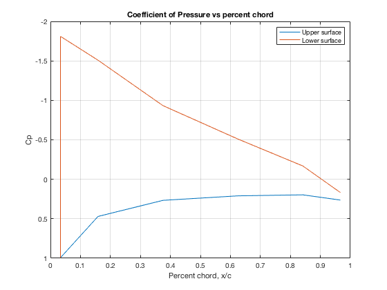
Problem 2
%NACA 0012 m = 0; p = 0; t = 12/100; c = 1; %m %? V_inf = 25; %set to 100 m/s %choose actual value as value found high high N (300) N = 300; [x, y] = NACA_Airfoils(m,p,t,c,N); [c_l_actual, cp_actual, X, Y] = Vortex_Panel(x,y,V_inf,0,0); %calculate error as panels increase N = 2:150; for i = 1:length(N) [x, y] = NACA_Airfoils(m,p,t,c,N(i)); [c_l, cp, X, Y] = Vortex_Panel(x,y,V_inf,0,0); error(i) = abs((mean(cp_actual) - mean(cp))/mean(cp_actual))*100; end %plot percent error of average cp vs number of panels figure(2) plot(N, error); title('Error vs Number of Panels'); yline(5, '--r'); xlabel('Number of Panels, N'); ylabel('Percent Error in average cp, %'); legend('error', '5% error'); grid on %find number of panels when error is <= 5% min_N = N(find(error <= 5,1)); fprintf("Using %d Panels...\n",min_N); %verify NACA airfoil generator works [x, y] = NACA_Airfoils(m,p,t,c,min_N); figure(3) plot(x, y); ylim([-0.2 0.2]) xlabel('x/c'); ylabel('y/c'); title('NACA 0012 Airfoil'); %loop through various alphas to find cl and cp alphas = [-5, 0, 5, 10]; for i = 1:length(alphas); [c_l(i), CP, X, Y] = Vortex_Panel(x,y,V_inf,alphas(i),0); figure(4) %plot cp vs x/c for each alpha on one plot c = max(X) - min(X); x = X(1:length(X)-1); %upper surface x_c = x./c; %invert the CP order for plot CP = CP(1:length(CP)-1); %upper surface plot(x,CP); set(gca, 'YDir','reverse') grid on title('Coefficient of Pressure vs percent chord'); xlabel('Percent chord, x/c'); ylabel('Cp'); hold on %legend('Upper surface', 'Lower surface'); cp_mean(i) = mean(CP); end legend('-5 degrees', '0 degrees', '5 degrees', '10 degrees'); %plot cl vs alpha and cp vs alpha at various alphas figure(5) sgtitle('NACA 0012'); subplot(1, 2, 1); plot(alphas, c_l); xlabel('Angle of Attack, degrees'); ylabel('Average Cl'); title('Cl vs alpha'); grid on subplot(1, 2, 2); plot(alphas, cp_mean); set(gca, 'YDir','reverse') xlabel('Angle of Attack, degrees'); ylabel('Average cp'); grid on title('Cp vs alpha');
Warning: Matrix is close to singular or badly scaled. Results may be inaccurate. RCOND = 2.775558e-17. Using 79 Panels...
 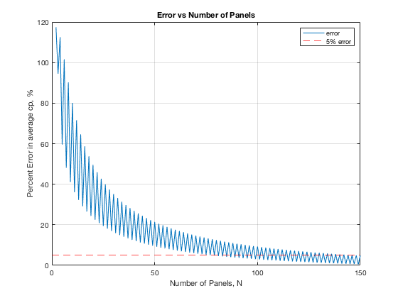 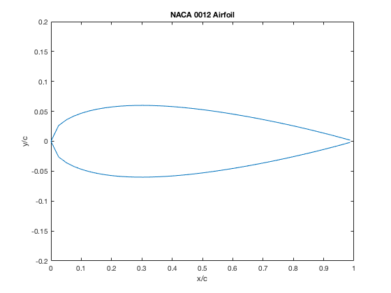 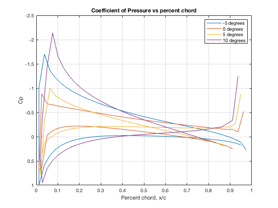 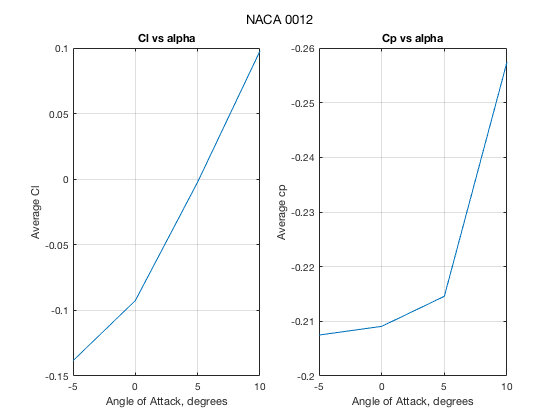
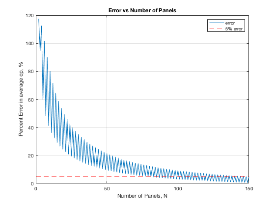 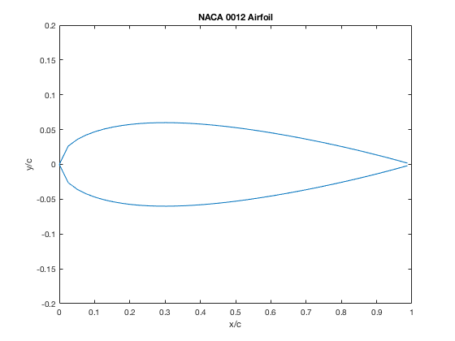 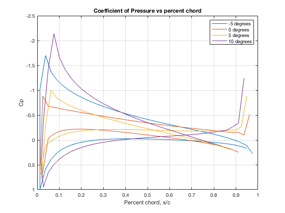 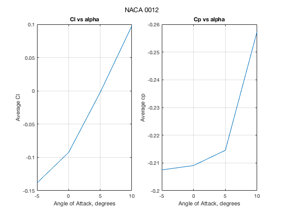 Problem 3
%vector of NACA names NACA_names = ['0012'; '2412'; '4412'; '2424']; %loop through each airfoil for i = 1:length(NACA_names) %get airfoil properties from name m = str2num(NACA_names(i,1))/100; p = str2num(NACA_names(i,2))/10; t = str2num(NACA_names(i,3:4))/100; %get cooridinates of airfoil shape [x, y] = NACA_Airfoils(m,p,t,c,min_N); %get cl from vortex panel method at various alphas %loop through alphas alphas = -5:0.5:5; for j = 1:length(alphas) [c_l(j), cp, X, Y] = Vortex_Panel(x,y,V_inf,alphas(j),0); end %plot cl vs alpha figure(5+i) plot(alphas, c_l); xlabel('Angle of Attack, degrees'); ylabel('Average Cl'); title_str = "Cl vs Alpha for NACA " + NACA_names(i,:); title(title_str); grid on %estimate lift slope lift_slope = (c_l(end) - c_l(1)) / alphas(end) - alphas(1); fprintf("----NACA %s----\n", NACA_names(i,:)); fprintf("estimated lift slope = %s rad^-1\n", lift_slope); %estimate zero-lift angle of attack zero_index = find(c_l >= 0, 1); %index where cl is zero zero_l_AoA = alphas(zero_index); %angle of attack xline(zero_l_AoA,'--k'); %add line on plot where lift = 0 fprintf("estimated zero lift AoA = %s degrees\n", zero_l_AoA); %compare with thin airfoil theory %lift slope should be 2*pi lift_slope_thin = 2*pi; zeroAoA_thin = calcZeroLiftAoA(m,p,t,c); %print and plot results cl_thin = lift_slope_thin.*(deg2rad(alphas)-deg2rad(zeroAoA_thin)); hold on plot(alphas, cl_thin); xline(zeroAoA_thin,'--g'); %add line on plot where lift = 0 legend('Vortex Panel Method', 'Zero-lift line for Vortex Panel','Thin Airfoil Theory','Zero-lift line for thin airfoil'); fprintf("\t thin airfoil theory lift slope = %s rad^-1\n", lift_slope_thin); fprintf("\t thin airfoil theory zero lift AoA = %s degrees\n", zeroAoA_thin); end
----NACA 0012---- estimated lift slope = 5.055344e+00 rad^-1 estimated zero lift AoA = degrees thin airfoil theory lift slope = 6.283185e+00 rad^-1 thin airfoil theory zero lift AoA = degrees ----NACA 2412---- estimated lift slope = 5.055298e+00 rad^-1 estimated zero lift AoA = -2.000000e+00 degrees thin airfoil theory lift slope = 6.283185e+00 rad^-1 thin airfoil theory zero lift AoA = -2.228169e+00 degrees ----NACA 4412---- estimated lift slope = 5.055160e+00 rad^-1 estimated zero lift AoA = -4.000000e+00 degrees thin airfoil theory lift slope = 6.283185e+00 rad^-1 thin airfoil theory zero lift AoA = -4.456338e+00 degrees ----NACA 2424---- estimated lift slope = 5.055025e+00 rad^-1 estimated zero lift AoA = -2.000000e+00 degrees thin airfoil theory lift slope = 6.283185e+00 rad^-1 thin airfoil theory zero lift AoA = -2.228169e+00 degrees
 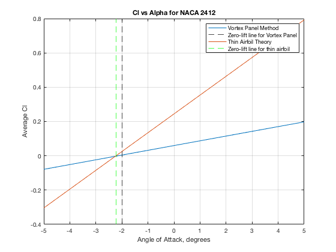 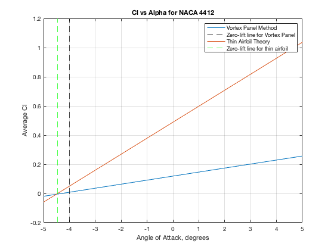 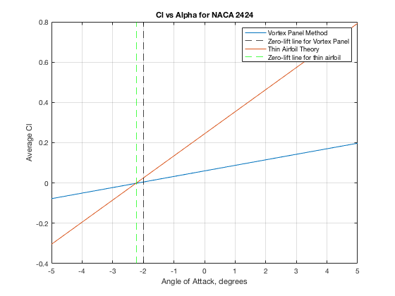
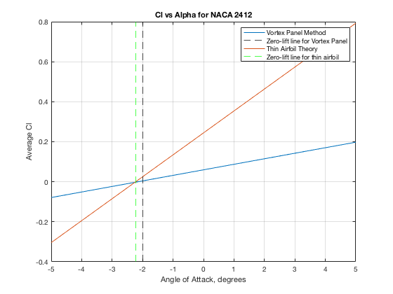 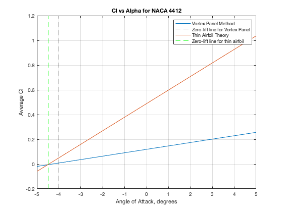 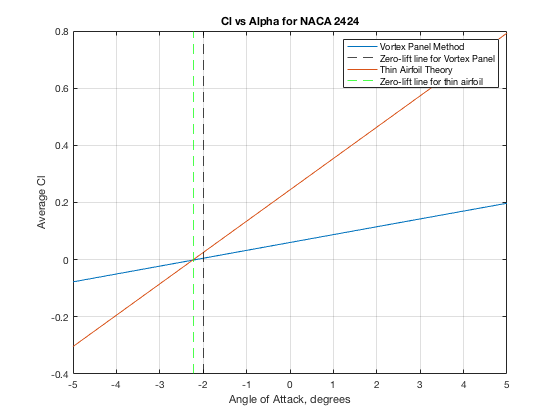 Functions Called
The following functions were built and called as apart of this assignment.
function [x,y] = NACA_Airfoils(m,p,t,c,N) %NACA_Airfoils constructs panels for a given NACA airfoil % This function returns vectors of the x and y locations of the boundary % points. This function takes in the max camber m, the location of the % max camber p, the thickness t, the chord length c, and N the number of % panels employed. % % Author: Margaux McFarland % Collaborators: % Date: 10/25/19 %x position along chord x_chord = 0:(2*c)/N:c; %calculate thickness distribution y_t = (t/0.2).*c.*(0.2969.*(x_chord./c).^(1/2)-0.1260.*(x_chord./c)-0.3516.*(x_chord./c).^2+0.2843.*(x_chord./c).^3-0.1036.*(x_chord./c).^4); %find formula for mean camber line if x_chord <= (p*c) y_c = m.*(x_chord./p^2).*(2*p - (x_chord./c)); elseif x_chord <= c y_c = m.*((c-x_chord)./(1-p)^2).*(1+(x_chord./c)-(2*p)); end %find slope of camber line if x_chord <= (p*c) dy_c = ((m/p^2).*(2*p - (x_chord./c))) + m.*(x_chord./p^2).*(2*p - (1/c)); elseif x_chord <= c dy_c = -(2.*m.*x_chord)./(c*(1-p)^2) + ((2*m*p)/(1-p)^2); end %anlge between camber and chord angle = atan(dy_c); %upper surface x_u = x_chord - y_t.*sin(angle); y_u = y_c + y_t.*cos(angle); %lower surface x_l = x_chord + y_t.*sin(angle); y_l = y_c - y_t.*cos(angle); %trim the first element so as not to repeat when combining the upper and %lower surface vectors x_l = x_l(2:end); y_l = y_l(2:end); %add corrdinates, starting from trailing edge x = [flip(x_l) x_u]; y = [flip(y_l) y_u]; end
function [c_l,c_p, X, Y] = Vortex_Panel(x,y,V_inf,alpha,print) %NVortex_Panel approximate coefficient of lift using the Vortex Panel %Method % This function returns the sectional coefficient of lift given a set of % (x,y) coordinates of an airfoil, free-stream airspeed, and the angle of % attack. Also returns the cp % % Author: Margaux McFarland % Collaborators: % Date: 10/25/19 N = length(x) - 1; %number of points MP1 = N + 1; %convert AoA to radians alpha = deg2rad(alpha); %cooridnates of the control points and panel length S are computed for i = 1:N IP1 = i + 1; X(i) = 0.5*(x(i) + x(IP1)); Y(i) = 0.5*(y(i) + y(IP1)); S(i) = sqrt((x(IP1) - x(i))^2 + (y(IP1) - y(i))^2); theta(i) = atan2((y(IP1) - y(i)), (x(IP1) - x(i))); sine(i) = sin(theta(i)); cosine(i) = cos(theta(i)); %right hand side of equation RHS(i) = sin(theta(i) - alpha); end for i = 1:N for j = 1:N if i == j CN1(i,j) = -1; CN2(i,j) = 1; CT1(i,j) = 0.5*pi; CT2(i,j) = 0.5*pi; else %constants A = -(X(i) - x(j))*cosine(j) - (Y(i) - y(j))*sine(j); B = (X(i) - x(j))^2 + (Y(i) - y(j))^2; C = sin(theta(i) - theta(j)); D = cos(theta(i) - theta(j)); E = (X(i) - x(j))*sine(j) - (Y(i) - y(j))*cosine(j); F = log(1 + S(j)*(S(j)+2.*A)/B); G = atan2(E*S(j), B+A*S(j)); P = (X(i)-x(j))*sin(theta(i)-2.*theta(j)) + (Y(i) - y(j))*cos(theta(i) -2.*theta(j)); Q = (X(i) - x(j))*cos(theta(i)-2.*theta(j)) - (Y(i) - y(j))*sin(theta(i)-2.*theta(j)); CN2(i,j) = D + 0.5*Q*F/S(j) - (A*C+D*E)*G/S(j); CN1(i,j) = 0.5*D*F + C*G - CN2(i,j); CT2(i,j) = C + 0.5*P*F/S(j) + (A*D-C*E)*G/S(j); CT1(i,j) = 0.5*C*F - D*G - CT2(i,j); end end end %compute influence coefficients for i = 1:N AN(i,1) = CN1(i,1); AN(i,MP1) = CN2(i,N); AT(i,1) = CT1(i,1); AT(i,MP1) = CT2(i,N); for j = 2:N AN(i, j) = CN1(i,j) + CN2(i,j-1); AT(i, j) = CT1(i,j) + CT2(i,j-1); end end AN(MP1, 1) = 1; AN(MP1, MP1) = 1; for j = 2:N AN(MP1,j) = 0; end RHS(MP1) = 0; %solver for dimensionless strengths gama using Cramer's rule. Then compute %and print the dimensionless velocity and pressure coefficient at control %points GAMA = AN\RHS'; if print %only print to show Kuthe and Chow example works fprintf("i X(i) Y(i) theta(i) S(i) GAMA(i) V(i) CP(i)\n"); fprintf("-- ---- ---- -------- ---- ------- ---- -----\n"); end for i = 1:N V(i) = cos(theta(i)-alpha); for j = 1:MP1 V(i) = V(i) + AT(i,j)*GAMA(j); CP(i) = 1.0 - V(i)^2; end if print %only print to show Kuthe and Chow example works fprintf("%d %f %f %f %f %f %f %f\n", i, X(i), Y(i), theta(i), S(i), GAMA(i), V(i), CP(i)); end end c_p = CP; %plot c_p only if the first problem if print c = max(X) - min(X); x_up = X(1:length(X)/2); %upper surface x_c_up = x_up./c; x_low = X(length(X)/2:length(X)); %lower surface x_c_low = x_low./c; %invert the CP order for plot CP_up = CP(1:length(CP)/2); %upper surface CP_low = CP(length(CP)/2:length(CP)); %lower surface figure(1) plot(x_up,CP_up); set(gca, 'YDir','reverse') hold on plot(x_low, CP_low); set(gca, 'YDir','reverse') grid on title('Coefficient of Pressure vs percent chord'); xlabel('Percent chord, x/c'); ylabel('Cp'); grid on legend('Upper surface', 'Lower surface'); end %calcualte cl %kutta-joukowski (L = rho*V_inf*GAMA), but non-dimensionalize c_l = 2*sum(GAMA)/V_inf; %c is 1 end
function [zero_l_AoA] = calcZeroLiftAoA(m,p,t,c) %calcZeroLiftAoA calculates a zero lift angle of attack given airfoil %geometry, using thin airfoil theory % % Author: Margaux McFarland % Collaborators: % Date: 11/7/19 sym theta; %transform variable x_chord = @(theta)(c/2)*(1-cos(theta)); zero_l_AoA_rad = -(1/pi)*integral(@(theta) func(theta).*(cos(theta) - 1), 0, pi); function dy_c = func(theta) %find slope of camber line if x_chord(theta) <= (p*c) dy_c = ((m/p^2)*(2*p - (x_chord(theta)/c))) + m*(x_chord(theta)/p^2)*(2*p - (1/c)); elseif x_chord(theta) <= c dy_c = -(2*m*x_chord(theta))/(c*(1-p)^2) + ((2*m*p)/(1-p)^2); end end %convert to degrees zero_l_AoA = rad2deg(zero_l_AoA_rad); end